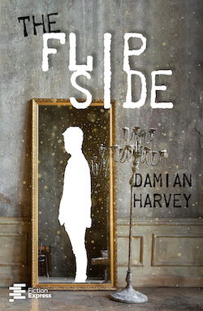
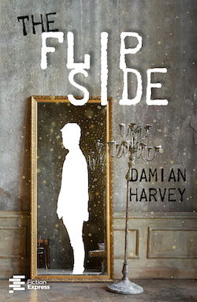

EDITORIAL DESIGN
I have around three years of experience in editorial design, both as part of the graphic design team at Fiction Express, a digital publisher, and in the self-publishing field. I have had the opportunity to work on more than 35 book cover design projects, especially in the YA, Middle Grade and Romance genres, as well as work on the interior design and formatting (be it ebooks or paper) as I prepare books for printing.
You can see some freelance editorial projects here (Japan Anecdotes) and here (Iris Amador).
I believe a cover is a powerful marketing tool, central to the success of a book. A cover's job is to help the work reach the right readers: one must be able to tell the genre, tone and target age group of a book simply by glancing at the cover. To that end, market research, staying up to date with cover trends and familiarising myself with each genre is key to my work process.

 
